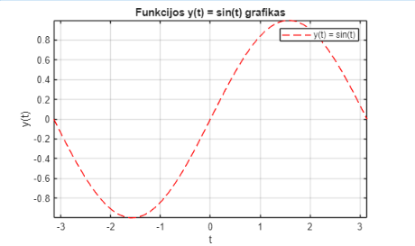
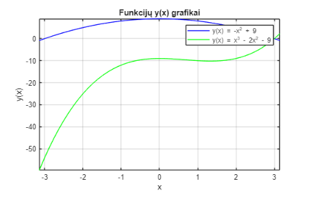
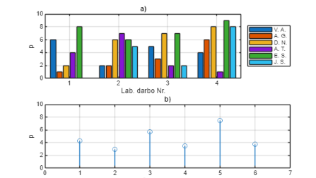
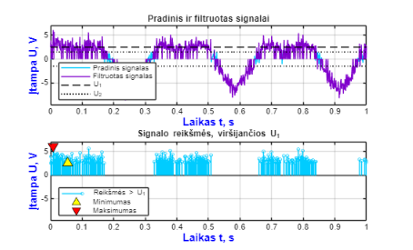
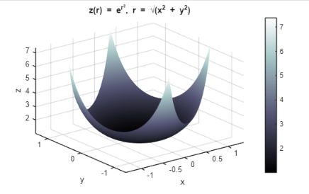
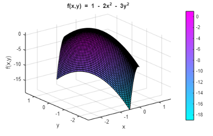
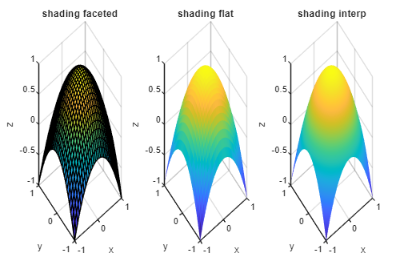

Portfolio
Graphs from my MATLAB laboratory work: 2D plots, signal processing and 3D surfaces.
- All
- Lab 3 – 2D graphs
- Lab 4 – 3D graphs


Plot of y(t) = sin(t)
A 2D line plot of one period of the sine function on [-π, π], drawn as a red dashed line with a legend, title, axis labels and grid.


Two functions in one plot
The parabola y = -x² + 9 (blue) and the cubic y = x³ - 2x² - 9 (green) on the same axes, compared with a legend and a grid.


Bar and stem charts of lab results
a) Grouped bar chart of six students' marks in four lab works. b) Stem chart of each student's average mark.


Signal filtering with thresholds
A noisy voltage signal, filtered with threshold U2 and compared with U1. Below, the values above U1 with the minimum and maximum marked.


Surface z = e^(r²)
3D surface of z = e^(r²), r = √(x² + y²), with the bone colormap, interpolated shading, rotation and a colorbar.


Paraboloid f(x, y) = 1 - 2x² - 3y²
3D surface of a two-variable function over x ∈ [-2, 1], y ∈ [-2, 1] with the cool colormap and faceted shading.


Shading modes compared
The same surface z = 1 - (x² + y²) drawn three times with faceted, flat and interp shading to show how each mode looks.